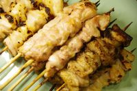

好きな○○
好きなこと
ゲーム・サッカー観戦
ゲームは色々なジャンルをプレイしていて、最近はOWというFPSジャンルのゲームをよくをしています。
サッカー観戦については兄の影響からサッカーをしていてそこからサッカーをプレイすることも観戦することも好きです。
好きな食べ物
お肉・ラーメン
お肉は、牛肉・豚肉・鶏肉の中で鶏肉が一番好きです。焼き鳥の炭火焼きがとても美味しいです。ラーメンは山岡家という店が大好きでその中でも特製味噌ラーメンは特に美味しいです。

好きな音楽
音楽は、テンションが上がったり気分が上がる曲を聴いていて、ONE OK ROCKのWasted Nightsという曲をよく聞いています。元々、キングダムが好きでキングダムの主題歌になった影響もあり、好きです。